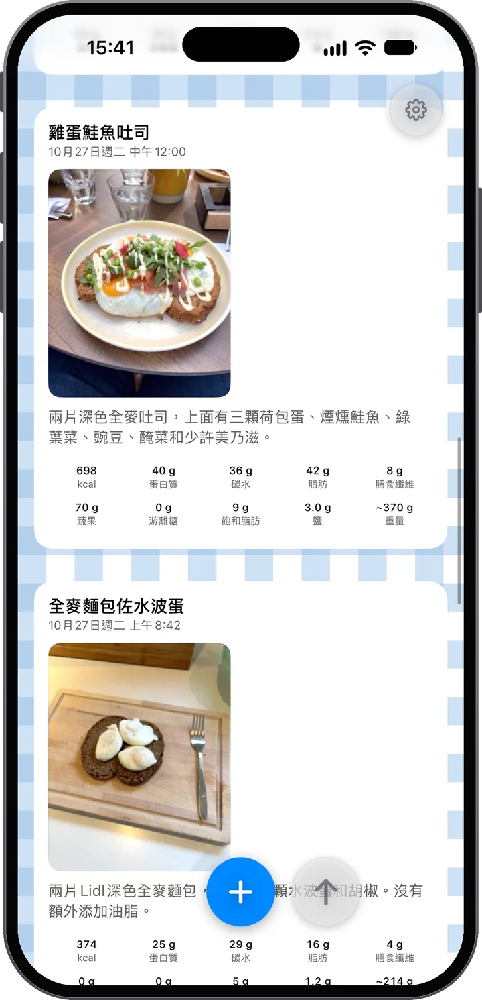
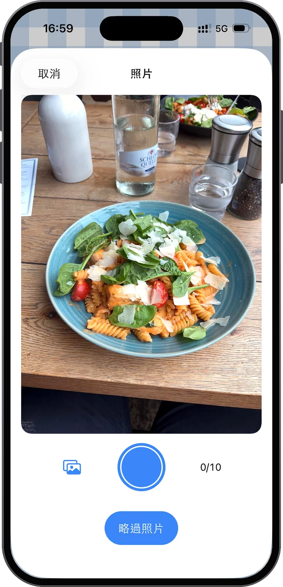
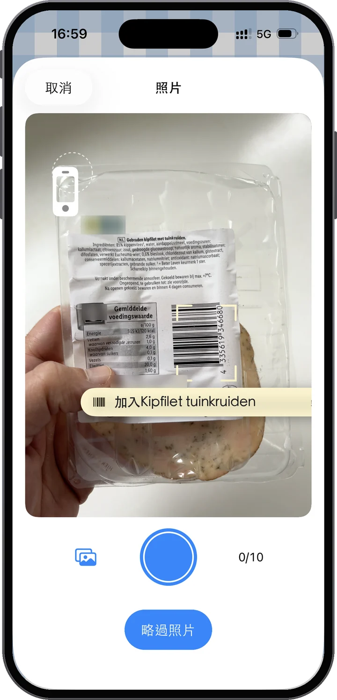
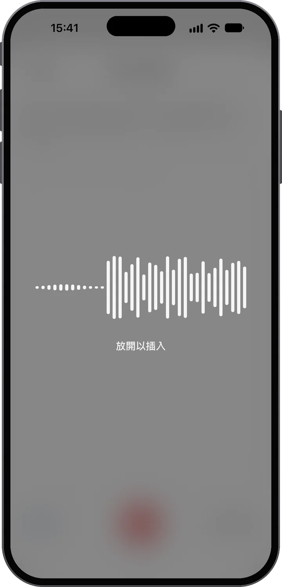
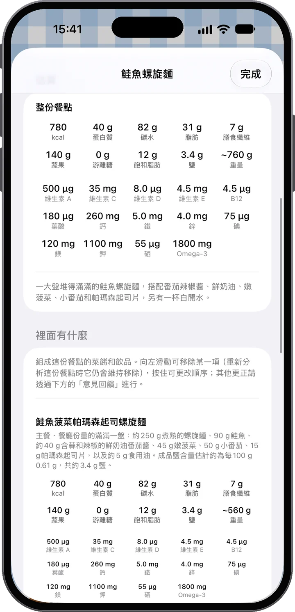
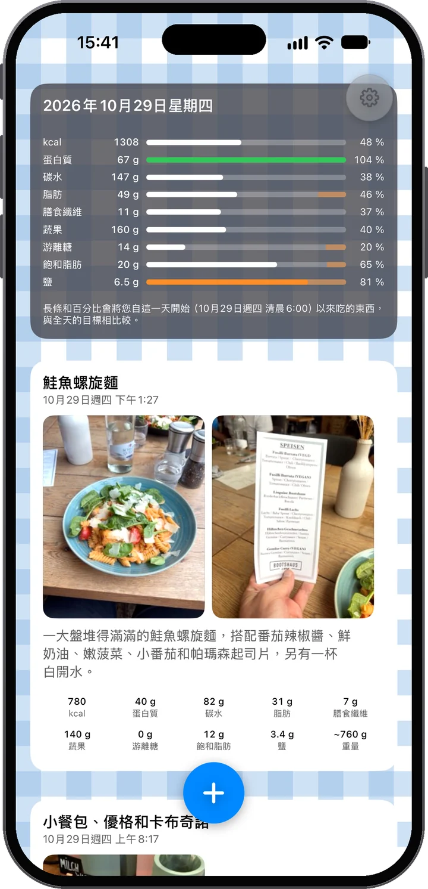
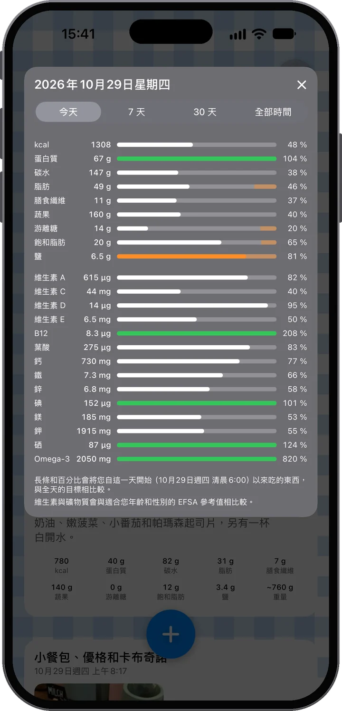

看見它。讀懂它。
拍下你的餐點，Food Moments 就把它變成你這一天的動態：照片在前，裡面究竟有什麼就在下方。照片拍不出來的，說出來就好——下一餐之前，先看看今天進行到哪裡了。

幾乎不費力氣，卻收穫滿滿的了解。
拍下你的食物——一張或幾張都可以。再補充一點背景：打字寫個備註，或者按住麥克風直接說。「兩顆荷包蛋和那個小麵包」，這樣就夠了。
這一餐會為你分析好：能量、蛋白質、碳水、脂肪、膳食纖維、蔬果、游離糖和鹽，一道菜一道菜地列出，並坦白告訴你估算有多可靠——你還能看到它在你這一天裡的位置。
一天下來，你的動態逐漸豐富，每日長條也跟著增長。你能看到今天的飲食是怎麼展開的，以及自己現在的位置——在選擇下一餐之前，而不是之後。
一整天都吃得挺均衡？你的長條會告訴你。那就放心吃甜點——吃得心安理得：你依然在目標之內，這是你自己的資料說的，不是亂猜。

照片優先
照片是最主要的依據。分析會讀懂菜色和份量——畫面裡有營養標示或條碼的話，連它們也會讀。而且不必只拍一張：一餐最多可以有十張照片。今晚下廚？邊做邊拍食材，最後拍成品——分析會把一切彙整起來。

或者掃條碼
把相機對準條碼，Food Moments 就能找到這個產品和它的營養標示，不用拍照。掃幾個產品，它們就組成一餐；再拍一張你做的菜，分析會採用標籤上的精確數值。產品資料來自 Open Food Facts。

再加上你的話——隨你喜歡
很多時候照片就夠了。不夠的時候——像是果昔裡加了什麼、那一鍋你實際吃了多少——就用你自己的話補充。喜歡打字就打字。不過真的可以試試麥克風：這裡的聽寫採用最新的語音模型，放開片刻後，你的話就出現在備註裡，即使在吵雜的街頭也很可靠。無論哪種方式，你說的話永遠比照片更算數——這個 App 聽你的。
雞肉沙拉、一片抹奶油的酸種麵包和半杯柳橙汁。
組成這份餐點的菜色和飲品。滑動可刪除，按住可調整順序——其他更正都透過「意見回饋」進行。
食物很清楚；份量則只能從照片判斷。請將這些數字視為接近值而非精確值——說明份量會讓它們更準確。
不只熱量的營養
每個 Food Moment 都會像菜單那樣拆解——每道菜、每杯飲品都有自己的份量和數字，再加總成總計：能量、蛋白質、碳水、脂肪、膳食纖維、蔬果、游離糖、鹽，以及估算的重量。App 也會坦白告訴你它有多少把握，讓你知道什麼時候補一句語音備註就能讓估算更準確。

你的專屬動態
你的正餐、飲品和點心隨著一天的進行陸續出現——照片在前，就像一份從營養角度看的個人動態。最上方的每日卡片即時記錄進度：每根長條都把你目前吃下的和全天目標相比，所以早上長條短並不是失敗——而是還有空間。每個目標都註明了公開來源：每個目標從何而來。


吃甜點吧。享受那片披薩。重要的是知道它代表什麼——放在你這一天的脈絡裡——然後帶著更充分的資訊做下一個決定。
我們的信念
好的食物帶來能量、支持健康，讓日常生活更美好。同時，沒有人能永遠吃得完美——Food Moments 讓這件事變得再正常不過。這是一款為在乎自己的人打造的 App，而不是因為你吃東西就懲罰你的 App。
隱私，從設計開始
帳號只需你的電子郵件——不用姓名，不用密碼。你的餐點存放在歐盟，隨時可以下載或刪除。
你的帳號只是你的電子郵件地址。沒有密碼，沒有姓名——用一次性驗證碼登入，你的餐點、照片和歷史紀錄保存在你位於歐盟伺服器上的帳號裡，換新 iPhone 也能全部找回。照片和備註會傳送給 AI，用於你所要求的營養分析——須經你同意，且絕不用於建立個人檔案；只有你開啟協助改善 Food Moments，我們才會親自查看你的餐點。聽寫同樣留在歐盟：它有獨立的同意，只詢問一次，其語音服務和分析一樣在歐盟運作——App 傳送的任何內容都不會離開歐盟。隨時可以在「設定」中下載全部資料或刪除帳號。詳情請見隱私權政策，用語淺白易懂。

前 14 天免費。在試用結束前於你的 Apple 帳號中取消，就不會產生任何費用。